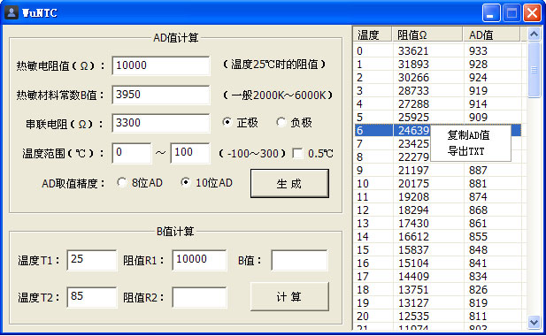
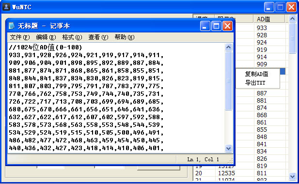

Nobody can go back and start a new begining but anyone can start now and make a new ending.
NTC热敏电阻计算工具
NTC热敏电阻计算工具


内容说明： NTC热敏电阻AD值计算、导出 B值计算软件工具。本软件利用公式，方便使用者快速计算出NTC热敏电阻的AD值，及导入AD值使用。
单文件EXE，其它图片为说明文件，可删除.单台电脑使用，如重装系统再用注册码注册一次便可以，注码码请加群联系
下载地址：本站下载